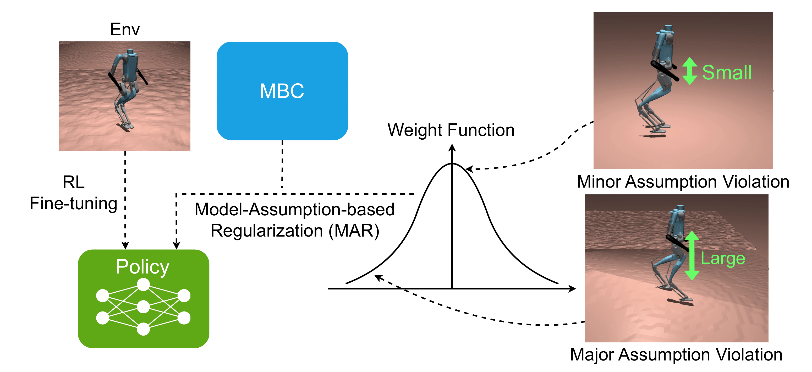

PPF: Pre-training and Preservative Fine-tuning of Humanoid
Locomotion via Model-Assumption-based Regularization
RA-L 2025
Hyunyoung Jung*1, Zhaoyuan Gu*1, Ye Zhao2, Hae-Won Park1, Sehoon Ha1
1Georgia Institute of Technology 2Korea Advanced Institute of Science and Technology (KAIST)
* co-first authors
🔑 Key idea
Imitate the model-based controller (MBC) and then fine-tune with RL, while regularizing the policy with Model-Assumption-based Regularization (MAR) in the fine-tuning stage to preserve the learned motion style and avoid forgetting.
Motivation 1
Earlier approach (IFM) leads to motion forgetting in humanoid where the policy loses the pre-trained motion style from the MBC.
Motivation 2
While regularizing the policy with the MBC's action in the fine-tuning stage seems like a solution, the MBC's guidance becomes unreliable when its underlying assumptions are violated.
Method Overview
We address this with Model-Assumption-based Regularization (MAR): during fine-tuning, the policy is regularized with the MBC's action when the state aligns with the MBC's modeling assumptions, while the regularization weight is reduced in states where those assumptions are violated.

Overview of Model-Assumption-based Regularization (MAR).Results
We design simulation tests and hardware experiments to investigate the following questions:
(1) Can PPF learn an effective policy in the training environments?
(2) Can PPF show robust performance in sim-to-sim and sim-to-real transfer scenarios compared to the baseline methods?
(3) Can MAR dynamically adjust the sample weights based on the model-based assumption violation?
Indoor Hardware Experiments
Outdoor Hardware Experiments
BibTeX
@ARTICLE{11155209,
author={Jung, Hyunyoung and Gu, Zhaoyuan and Zhao, Ye and Park, Hae-Won and Ha, Sehoon},
journal={IEEE Robotics and Automation Letters},
title={PPF: Pre-Training and Preservative Fine-Tuning of Humanoid Locomotion via Model-Assumption-Based Regularization},
year={2025},
volume={10},
number={11},
pages={11466-11473},
keywords={Humanoid robots;Computational modeling;Legged locomotion;Robots;Adaptation models;Training;Foot;Quadrupedal robots;Neural networks;Tuning;Humanoid and bipedal locomotion;reinforcement learning;continual learning},
doi={10.1109/LRA.2025.3608637}}
Contact
If you have any questions, please feel free to contact Hyunyoung Jung.